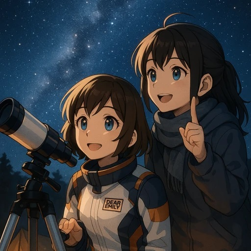

ステップ4｜初心者でも安心！天体観測デビューの夜｜望遠鏡の選び方と星空案内
🌌 宙ガールの成長ノート Vol.4｜「星が光ってる」だけじゃない観測体験
エミリーは、これまでのステップで、星の名前や星座の物語、そして月と暦の深いつながりを学んできました。夜空は彼女にとって、もはや「ただの暗い空」ではありません。しかし、まだ心の中に残る小さな疑問がありました。
「空を見上げても、やっぱりただの点にしか見えない…」
都会のベランダから肉眼で見える星は限られており、その輝きもどこか遠い。そんな彼女のつぶやきに、ベテラン宙ガールの友人は優しく答えました。
「その“点”が、実は何十億km彼方にある巨大な星だとか、何十億もの星の集まりでできた銀河だとか思えたら、世界が変わるよ」
そして、友人は続けて言いました。「エミリー、次は望遠鏡を覗いてみない？きっと、見える世界がガラッと変わるから。」
エミリーが初めて望遠鏡を覗いた夜。そこには、肉眼では決して見ることのできなかった「宇宙の深み」が広がっていました。小さな光の点が、息をのむような美しい姿で目の前に現れた時、エミリーは鳥肌が立つほどの感動を覚えました。
それは単なる「星を見る」という行為ではありませんでした。「宇宙に今、わたしが触れている」という感覚。遥か彼方にあるはずの星々が、まるで自分の手の中に収まるかのように、くっきりとその姿を現した瞬間、エミリーの心は完全に掴まれました。
星を見るのではなく、“宇宙とつながる感覚”を得ること。それが、天体観測の醍醐味であることを、エミリーはその夜、身をもって知ったのです。
このステップでは、あなたもエミリーと一緒に、初めての天体観測に必要な準備、適切な道具の選び方、そして何よりも大切な観測のマインドをすべて学びます。
---🔭 ステップ4の目的
このステップを終える頃には、あなたは自信を持って天体観測デビューができるようになります。
- 初心者でも実践できる天体観測の基礎知識を学ぶ： どんな準備が必要か、何をすればいいのかを具体的に把握します。
- 望遠鏡や双眼鏡の選び方と違いを理解する： 自分に合った道具を見つけるための知識を身につけます。
- 観測に適した日時・場所・服装などを知る： 最高の条件で星空を楽しむためのノウハウを習得します。
- 星空と向き合う時間の価値を体験する： 観測がもたらす感動と、宇宙との一体感を味わう準備をします。
🧳 観測の準備｜3つのステップで安心スタート

「いざ、天体観測に出かけるぞ！」と意気込んでも、何から始めたらいいか分からないかもしれません。でも大丈夫。エミリーも最初は同じでした。ここでは、初心者でも安心して観測を始められる3つのステップをご紹介します。
STEP1｜星空アプリで“今日の空”を確認
まずは、あなたのスマートフォンが最高のツールになります。観測に出かける前に、今日、そしてこれから見える星空の様子をシミュレーションしてみましょう。
おすすめアプリ：
- Star Walk 2：美しいグラフィックと豊富な情報量で、初心者からベテランまで楽しめる人気のアプリです。AR（拡張現実）機能を使えば、スマホを空にかざすだけで、星や星座、惑星の名前が表示されます。
- Sky Guide：洗練されたデザインと直感的な操作性が魅力。こちらもAR機能が充実しており、彗星や人工衛星の予報まで確認できます。
使い方例：
- 現在地を設定： アプリを起動すると、GPSで自動的に現在地が認識されます。
- 日時を調整： 今夜の星空だけでなく、数日後や数週間後の星空を予測して見ることもできます。観測予定日の夜、何時頃にどんな星が見えるのかを確認しましょう。
- 観測対象をチェック： 見たい星や惑星、星座の名前を検索し、今夜見えるかどうか、どの方向に現れるかを確認します。例えば、土星の輪や木星の縞模様が見ごろの時期なのか、月のクレーターがはっきり見える上弦や下弦の時期なのかなど、狙いを定めましょう。
これらのアプリを使えば、星の位置確認はもちろん、今日の月齢や惑星の動きまで簡単に把握できます。まるで、自分だけのポケットプラネタリウムを持っているような感覚ですよ。
STEP2｜持ち物チェックリスト
快適な天体観測のためには、適切な持ち物も重要です。エミリーも、最初は荷物が多くて大変でしたが、経験を積むうちに、何が必要か、何が不要かを見極められるようになりました。
| 持ち物 | 用途 |
|---|---|
| 防寒具（季節問わず） | 夜間は想像以上に冷え込みます。夏でも薄手のジャケットやひざ掛けがあると安心です。特に、じっと座って観測する際は体が冷えやすいので、重ね着できるものを用意しましょう。 |
| レジャーシートまたはアウトドアチェア | 寝転がって星を見るならレジャーシート、座ってじっくり観測するなら折りたたみ式のアウトドアチェアが快適です。首への負担を減らすためにも、リラックスできる体勢を確保しましょう。 |
| 赤色ライトまたはヘッドライト | 普通の白色ライトは、暗闇に慣れた目を刺激してしまい、星が見えにくくなります。赤色ライトなら、視力への影響が少なく、足元や手元を照らすのに最適です。スマホのライトに赤いセロハンを貼るだけでも代用できます。 |
| 虫よけスプレー | 特に夏場や草木が多い場所での観測には必須です。集中して星を見るためにも、虫刺され対策は万全に。 |
| 飲み物・軽食 | 長時間観測する場合、水分補給は欠かせません。温かい飲み物（ココアやハーブティーなど）は、体を温める効果もあります。簡単に食べられるお菓子などもあれば、休憩中に小腹を満たせます。 |
| 筆記用具・ノート | 見つけた星や星座、その時の感動などを記録するのに役立ちます。観測記録をつけ続けることで、知識が深まり、自分だけの「星空図鑑」が作れます。 |
| 星座早見盤または星空アプリ搭載のスマホ/タブレット | 今日の星空でどの星座が見えるか、特定の星の位置を知るために使います。スマホアプリは手軽ですが、電源消耗や画面の明るさに注意が必要です。 |
| 双眼鏡または望遠鏡（後述） | 肉眼では見えない天体を見るための必須アイテムです。自分の観測スタイルや目的に合ったものを選びましょう。 |
これらの準備をしっかり行うことで、初めての天体観測もぐっと快適で楽しいものになります。
STEP3｜観測に適した日時・場所を選ぶ

最高の星空に出会うためには、「いつ、どこで」観測するかが非常に重要です。エミリーは、友人のアドバイスで、場所選びの重要性を痛感しました。
日時を選ぶ：
- 月明かりの少ない夜：新月の前後数日間がベストです。満月が近いと月明かりが明るすぎて、暗い星や天の川が見えにくくなります。月のクレーターを見るなら上弦や下弦の月がコントラストがはっきりしておすすめです。
- 晴れた夜：これは当然ですが、雲一つない晴天が理想です。天気予報で「快晴」や「星空指数」をチェックしましょう。
- 空気が澄んでいる夜：雨上がりの翌日や、冬の晴れた日などは、空気が乾燥していてチリが少ないため、星がよりクリアに見えます。
- 天体イベントの時期：流星群の時期、惑星が大接近する時期など、特別な天体イベントに合わせて観測を計画するのもおすすめです。
場所を選ぶ：
- 光害（こうがい）の少ない場所：街の明かりが少ない場所を選びましょう。公園、河川敷、学校の校庭など、周囲に高い建物や明るい街灯が少ない場所が理想です。可能であれば、郊外や山間部、海岸線など、光害マップで「青」や「黒」に表示されるような場所まで足を延ばせると、肉眼でも天の川が見えるほどの感動的な星空が広がります。
- 安全な場所：夜間の観測なので、一人で行かず、複数人で行動しましょう。足元が悪くないか、防犯面はどうかなど、事前に確認しておくことが大切です。
- 開けた場所：ビルや木々に遮られず、広い範囲の空が見渡せる場所を選びましょう。
これらの条件を考慮することで、あなたの天体観測体験は格段に素晴らしいものになるはずです。
---🔭 望遠鏡？双眼鏡？｜最適なツール選び

「どんな道具を選べば、もっと星がよく見えるようになるんだろう？」
エミリーは、友人の望遠鏡を覗いて以来、自分に合った観測ツールが欲しくなりました。しかし、望遠鏡と一口に言っても種類がたくさん。そこで、初心者におすすめの道具とその選び方を教えてもらいました。
まずは双眼鏡から始めるのがおすすめ！
「いきなり高価な望遠鏡を買うのはハードルが高いな…」と感じる方もいるかもしれません。そんな宙ガールには、まず双眼鏡から始めることを強くおすすめします。
- 手軽さ：軽量で持ち運びやすく、操作も簡単です。
- 広視野：望遠鏡よりも広い範囲の空を一度に見ることができるため、目当ての星を見つけやすいのが特徴です。星座全体や天の川、大きな星団などを広がりを持って楽しむことができます。
- 手頃な価格：数千円から手に入るものが多く、初めての観測ツールとして最適です。
- 用途の広さ：野鳥観察やスポーツ観戦など、天体観測以外にも活用できます。
双眼鏡の選び方：
「10×50」や「8×42」といった表記を見かけると思います。これは、「倍率×対物レンズの口径（ミリメートル）」を表しています。初心者には、「7倍〜10倍」程度で「口径30mm〜50mm」のものがおすすめです。
- 7×50：明るく広い視野が得られ、手ブレも少ないため、入門用として非常に人気があります。
- 10×42：より高倍率で、月のクレーターや木星の衛星なども見やすくなります。
あまり倍率が高すぎると手ブレが激しくなり、かえって見づらくなるので注意しましょう。可能であれば、三脚に取り付けられるタイプのものがより安定した視界が得られます。
望遠鏡にステップアップするなら
双眼鏡で物足りなくなったら、いよいよ望遠鏡の出番です。望遠鏡は、双眼鏡では見えないような遥か遠くの天体を、より大きく、より詳細に見せてくれます。
望遠鏡の種類：
大きく分けて「屈折望遠鏡」と「反射望遠鏡」があります。初心者には、メンテナンスが比較的容易な屈折望遠鏡がおすすめです。
- 屈折望遠鏡（アクロマート・アポクロマート）：レンズを使って光を集めるタイプ。見え方がシャープで、メンテナンスが比較的楽です。月や惑星の観測に適しています。
- 反射望遠鏡（ニュートン式・カセグレン式など）：鏡を使って光を集めるタイプ。大口径のものが比較的安価で手に入り、暗い星雲や星団など、淡い天体の観測に適しています。
望遠鏡選びのポイント：
- 口径（こうけい）：望遠鏡の性能を最も左右するのが「口径（レンズや主鏡の直径）」です。口径が大きいほど多くの光を集められ、暗い天体や微細な模様が見えやすくなります。初心者には、口径60mm〜80mm程度から始めるのが良いでしょう。
- 焦点距離（しょうてんきょり）：像の倍率や視野の広さに影響します。長いほど高倍率になりますが、視野は狭くなります。
- 架台（かだい）：望遠鏡を支える土台で、「経緯台（けいいだい）」と「赤道儀（せきどうぎ）」があります。
- 経緯台：上下左右に動かすタイプで、直感的で操作が簡単です。初心者向け。
- 赤道儀：天体の動きに合わせて追尾できるタイプで、高倍率での観測や写真撮影に適していますが、設置や操作が複雑です。
まずは操作が簡単な経緯台タイプから始め、慣れてきたら赤道儀へのステップアップを検討するのが良いでしょう。
- セット内容：初心者向けの望遠鏡は、本体、架台、三脚、アイピース（接眼レンズ）がセットになっているものが多く、これ一つで観測を始められます。
実際に購入する際は、可能であれば天体望遠鏡を扱っている店舗で、店員さんに相談しながら選ぶのがベストです。予算と目的に合わせて、最適な一台を見つけましょう。
---✨ 初めての観測体験｜宇宙とつながる夜

準備が整ったら、いよいよ観測デビューです。エミリーは初めて望遠鏡を覗いた夜のことを、今でも鮮明に覚えています。それは、彼女の人生観を変えるほどの体験でした。
「わぁ…！月のクレーターが、こんなに鮮明に見えるなんて！」
望遠鏡の接眼レンズを覗くと、今まで写真でしか見たことのなかった月の表面が、まるで手の届くところにあるかのように、凹凸までくっきりと見えました。光と影が織りなすクレーターの陰影は、数えきれないほどの物語を秘めているようでした。エミリーは思わず息をのみました。
さらに、木星を覗くと、その美しい縞模様と、その周りを回る小さな点（ガリレオ衛星）が見えました。400年以上も前にガリレオ・ガリレイが発見したのと同じ光景が、今、自分の目の前に広がっていることに、エミリーは深い感動を覚えました。「私もガリレオと同じものを見ている！」そう思うと、何百年もの時を超えて、宇宙の真理に触れているような、不思議な一体感が湧いてきました。
それは、ただの知識の習得ではありませんでした。視覚を通じて、五感で宇宙を感じる体験です。地球という小さな惑星の上にいる自分と、遥か彼方に広がる広大な宇宙とのつながりを、肌で感じることができたのです。
観測中は、静かに、そしてゆっくりと呼吸をしてみてください。都会の喧騒から離れ、宇宙の音に耳を傾けるように、全身で夜空を感じてみましょう。そうすれば、きっとあなたもエミリーのように、宇宙との一体感を味わえるはずです。
---📝 エミリーのノート：宇宙の深みに触れて

初めての望遠鏡観測を終えたエミリーのノートには、興奮と感動がそのままに綴られていました。
📝エミリーのメモより
「今まで見てた月や星は、いったい何だったんだろう？今日、望遠鏡で見た月は、写真で見るよりもずっと立体的で、生きているみたいだった。クレーターの一つ一つに、月の歴史が刻まれているような気がした。
そして木星！あの縞模様と、周りの小さな点々…。あれが衛星なんだって思うと、感動で鳥肌が止まらなかった。地球のこんな小さな場所から、何億キロも離れた惑星の姿を見れるなんて、本当に宇宙ってすごい。自分が宇宙の一部なんだって、心から感じた夜だった。
これからは、もっといろんな星や惑星を覗いてみたい。星雲とか銀河とか、もっともっと遠くの世界を見てみたい。天体観測って、ただ空を見上げるだけじゃなくて、宇宙の歴史と神秘に触れることができる、最高の時間なんだね。
この感動を、もっとたくさんの人と分かち合いたいな。宙ガール、これからもどんどん成長するぞ！」
エミリーのノートには、宇宙への尽きない探求心と、その感動を共有したいという温かい気持ちが記されていました。彼女の宙ガールとしての旅は、着実に次のステージへと進んでいます。
---🌟 まとめ：天体観測は「宇宙の扉」を開く鍵

天体観測は、私たちが住む地球から、遥か彼方の宇宙に広がる無限の神秘に触れる、最も直接的な方法です。
ただ知識として知るだけでなく、実際に望遠鏡や双眼鏡を通してその光景を目の当たりにすることで、宇宙への理解はぐっと深まり、私たちは自身の存在が、この広大な宇宙と密接につながっていることを実感できます。
望遠鏡の選び方から、観測の準備、そして実際に星を覗く体験まで、このステップで学んだことを活かして、あなたもぜひ「天体観測デビュー」を果たしてみてください。きっと、あなたの人生観を変えるような、素晴らしい出会いが待っているはずです。
さあ、今夜、あなたも宇宙の扉を開いてみませんか？
---🔭 次回予告：星空の楽しみ方、もっと深く！

望遠鏡を通して宇宙の深みを体験したエミリーは、さらに星空の世界へと足を踏み入れます。
次回は、宙ガールへの旅のステップ5「星空の楽しみ方、もっと深く！｜写真・星座神話・イベントへの参加」です。
観測した星空を写真に残す方法、星座神話をさらに深掘りする楽しさ、そして地域の観測会やイベントに参加して、仲間と感動を分かち合う方法など、天体観測をより豊かにするヒントをエミリーと一緒に探求しましょう。
💫 星空は、無限の楽しみ方を教えてくれる！
次回も、あなたの宙ガールライフをさらに充実させるための情報をお届けします。お楽しみに！